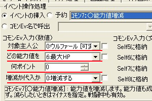
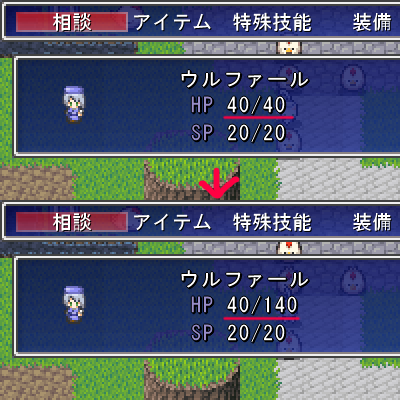

・まずマップ選択
・まずマップ選択・適当な場所にイベントを作成してニワトリの画像を設定しておきます。
手順は◆決定キーで起動するイベントの【1】〜【5】を参考にしてください。
| ・話かけると能力値を上げてもらえるイベントを作る |
| ・まずマップ選択 ・適当な場所にイベントを作成してニワトリの画像を設定しておきます。 手順は◆決定キーで起動するイベントの【1】〜【5】を参考にしてください。 |
 作成したら、イベントウィンドウの右下にある「■コマンド入力ウィンドウ表示■」をクリックしてください。 作成したら、イベントウィンドウの右下にある「■コマンド入力ウィンドウ表示■」をクリックしてください。1.「イベントコマンドの挿入」ウィンドウが出たら、 その他2タブをクリックします。「画像の1」 2.丸で囲まれた「イベントの挿入」が選ばれてい るか、確認します。「画像2」 文字の左の白丸に黒丸がついていれば、選択 されています。 ※ もし、選ばれてなかったらクリックして選択し て下さい。 3.四角3で囲まれた場所をクリックすると、選ぶこ とができるコモンイベントのリストが表示されま す。「画像3」 今回は能力増減のイベントなので、 「コモン7：○能力値増減」を選択しましょう。 |
 続いてコモンEv入力（数値）という欄をいじります。1.対象主人公では能力を増減させたいキャラクター を選択します。 2.どの能力値をでは増減したい能力値を選択しま す。 「成長率」を選ぶと、レベルアップ時の上昇値を設 定できます。 3.何ポイントでは増減（あるいは代入する）値を設 定できます。 ここで「−」の値を入力すると、減少させることが出 来ます。 4.増減か代入かでは、現在の値から増減するのか、 あるいは3.何ポイントで入力した値に書き換えるのか、を選択できます。 5.最後に右下の入力ボタンをクリックします。 これで能力の増減処理が完成しました！ |
 今回は、対象主人公：「ウルファール」の どの能力値：「最大HP」を 何ポイント：「100」ポイント 増減か代入か：「増減」で上昇させてみました。 このように能力値が増減していたら成功です。 ※もし上手くいかなかったら…… 【3】の入力時に入力箇所や対象が間違っていないかを確認してみましょう。 |